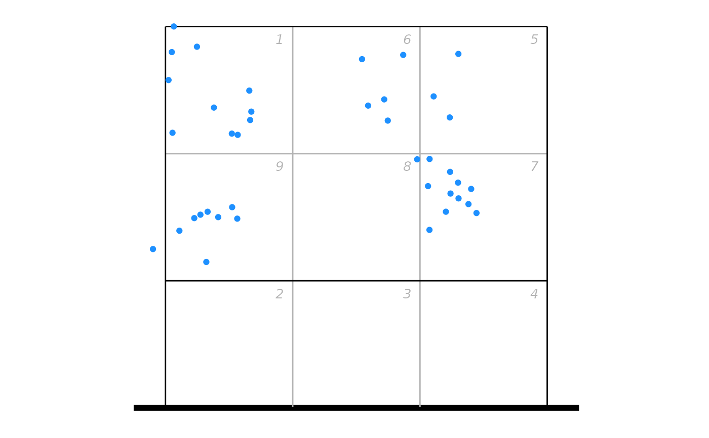
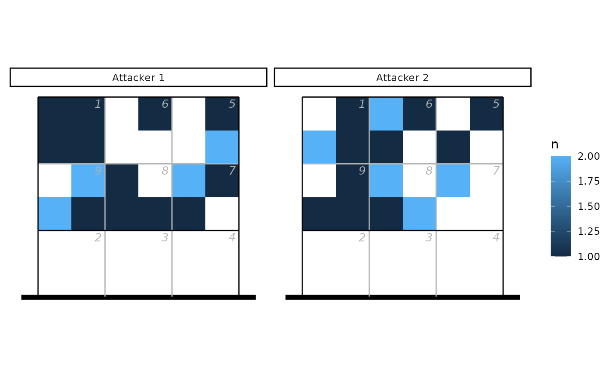

Kernel density estimates for volleyball heatmaps
Usage
ov_heatmap_kde(
x,
y,
N = NULL,
resolution = "coordinates",
bw,
n,
court = "full",
auto_flip = FALSE
)Arguments
- x
: either a numeric vector of x-locations, or a three-column data.frame or matrix with columns
x,y, and optionallyN. Ifxis a grouped tibble, the kernel density estimates will be calculated separately for group- y
numeric: (unless
xis a data.frame or matrix) a numeric vector of y-locations- N
numeric: (unless
xis a data.frame or matrix) a numeric vector of counts associated with each location (the corresponding location was observedNtimes)- resolution
string: the resolution of the locations, either "coordinates" or "subzones"
- bw
numeric: a vector of bandwidths to use in the x- and y-directions (see
MASS::kde2d()). If not provided, default values will be used based on the location resolution- n
integer: (scalar or a length-2 integer vector) the number of grid points in each direction. If not provided, 60 points in the x-direction and 60 (for half-court) or 120 points in the y-direction will be used
- court
string: "full" (generate the kernel density estimate for the full court) or "lower" or "upper" (only the lower or upper half of the court)
- auto_flip
logical: if
TRUE, andcourtis either "lower" or "upper", then locations corresponding to the non-selected half of the court will be flipped. This might be appropriate if, for example, the heatmap represents attack end locations that were scouted with coordinates (because these aren't necessarily all aligned to the same end of the court by default)
Examples
library(ggplot2)
library(datavolley)
## Example 1 - by coordinates
## generate some fake coordinate data
Na <- 20
set.seed(17)
px <- data.frame(x = c(runif(Na, min = 0.4, max = 1.2), runif(Na, min = 2, max = 3)),
y = c(runif(Na, min = 4.5, max = 6.6), runif(Na, min = 4.9, max = 6.6)))
## plot as points
ggplot(px, aes(x, y)) + ggcourt(labels = NULL, court = "upper") +
geom_point(colour = "dodgerblue")

## or as a heatmap
hx <- ov_heatmap_kde(px, resolution = "coordinates", court = "upper")
#> Warning: row names were found from a short variable and have been discarded
ggplot(hx, aes(x, y, fill = density)) +
scale_fill_distiller(palette = "Purples", direction = 1, labels = NULL,
name = "Attack\ndensity") +
geom_raster() + ggcourt(labels = NULL, court = "upper")
## Example 2 - by subzones, with data from two attackers
## generate some fake data
Na <- 20
set.seed(17)
px <- data.frame(zone = sample(c(1, 5:9), Na * 2, replace = TRUE),
subzone = sample(c("A", "B", "C", "D"), Na * 2, replace = TRUE),
attacker = c(rep("Attacker 1", Na), rep("Attacker 2", Na)))
## convert to x, y coordinates
px <- cbind(px, dv_xy(zones = px$zone, end = "upper", subzone = px$subzone))
## plot as tiles
library(dplyr)
#>
#> Attaching package: ‘dplyr’
#> The following objects are masked from ‘package:stats’:
#>
#> filter, lag
#> The following objects are masked from ‘package:base’:
#>
#> intersect, setdiff, setequal, union
ggplot(count(px, attacker, x, y), aes(x, y, fill = n)) + geom_tile() +
facet_wrap(~attacker) + ggcourt(labels = NULL, court = "upper")

## or as a heatmap, noting that we group the data by attacker first
hx <- ov_heatmap_kde(group_by(px, attacker), resolution = "subzones", court = "upper")
ggplot(hx, aes(x, y, fill = density)) + facet_wrap(~attacker) +
scale_fill_distiller(palette = "Purples", direction = 1, labels = NULL,
name = "Attack\ndensity") +
geom_raster() + ggcourt(labels = NULL, court = "upper")